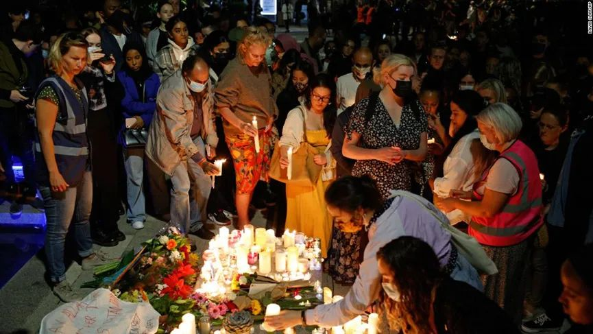

翻译社2022年2月|针对女性的谋杀（Femicide）——一只“房间里的大象”

针对女性的谋杀（femicide或feminicide），是性别暴力（GBV）中最极端的一种，被定义为“蓄意谋杀女性，只因为她们性别为女”。根据世界卫生组织（WHO）的数据：“大多数谋杀女性的案件都是由受害女性的伴侣或前伴侣犯下的，案件类型包括家庭中的持续虐待、威胁恐吓、性暴力以及类似遭遇，一般发生在女性比其伴侣拥有更少权力或资源的地方。”
针对女性的谋杀行为分为发生在亲密关系和非亲密关系中两类，前者是指现任或前任伴侣杀害女性的事件，后者的施害者与受害女性没有亲密关系。后一种包括：在武装冲突中女性被作为战争武器杀害、所谓的“名誉杀害”——认为她给家族带来耻辱，而杀害女性、因女性的种族或性取向而杀害女性、女性作为"父权制的代理人"杀害其他女性以及杀害跨性别女性。
全球“针对女性的谋杀”问题有多严重？
现阶段并没有关于针对女性的谋杀问题的全球化、标准化或长期持续记录的数据。
联合国毒品和犯罪问题办公室（UNODC）于2019年7月发布了2017年全球凶杀案报告。在2017年一年时间内，全世界有87000名妇女被故意杀害：其中一半以上（50000人）死于亲密伴侣或家庭成的杀害，总数比2012年估计的48000人有所增加。
但实际发生的问题可能更严重。欧洲性别平等研究所（European Institute of Gender Equality ）写道：“数据的缺口掩盖了暴力的真实规模”，该研究所预计于2023年公布欧盟范围内性别暴力的调查结果。
2021年7月4日，费尔南达·奥利瓦雷斯（Fernanda Olivares）的亲友在墨西哥城美术宫前放置鲜花，横幅和蜡烛，要求为她的死亡伸张正义。（摄影：Gerardo Vieyra/NurPhoto via Getty Images）
世界：全球各地针对女性的谋杀
根据2020年11月发布的遭谋杀女性人口普查10年报告，英国在2009年至2018年期间“每三天就有一名男性杀害一名女性”。
2017年，亚洲的女性遭谋杀人数创下历史最高纪录，其次是非洲、美洲、欧洲和大洋洲。2016年的一项研究“暴力致死的性别分析”的报告显示，尽管总体凶杀案数量很低，但斯洛文尼亚、新西兰、瑞士、奥地利是“女性凶杀率大于或等于男性凶杀率的高收入国家”前四名。
尽管联合国毒品和犯罪问题办公室的报告称：在所有谋杀案中被害者为女性的案件只占很小的比例，但杀害女性行为在全球流行的趋势仍然令人不安。从美国到阿尔巴尼亚，从墨西哥到澳大利亚，全球范围内都有针对大量暴力致使女性死亡的强烈抗议。
德国：每天都会有一名男性试图杀死他的伴侣或前伴侣
德国广播公司DW在2020年11月报道称：“在德国，每天都有一名男子试图杀死他的伴侣或前伴侣。每三天就有一个此类尝试成功实现。”“但是这类犯罪者往往能轻易逃脱。”活动家称。最新数据显示，2019年针对女性的家庭暴力有所增加。在欧盟所有国家中，德国2018年杀害女性案件数是最高的。
“杀害伴侣这种事件并不是突然发生的”，现任黑森州内政部的预防犯罪部门的领导舍费尔说，"这是多年家庭暴力的悲惨后果，起因是各种羞辱以及经济压力。"
墨西哥：针对女性的谋杀盛行，但当局漠视问题
国际特赦组织发布的一份最新报告称，墨西哥每天至少有 10 名妇女和女孩遭到杀害，而受害者的家人经常被迫需要自行进行凶案调查。这份报告记录了墨西哥针对女性的暴力规模之大以及墨西哥当局对于预防或解决此类谋杀案令人不安的漠视。
几十年来，杀害女性的行为在墨西哥盛行——其中最为臭名昭著的是 1990 年代边境城市华雷斯城（Ciudad Juárez）发生的一场谋杀案，夺去了大约 400 名妇女的生命。近年来，日益壮大的女权运动，针对暴力事件举行了大规模的街头抗议，但事实证明，当局并不愿意采取行动制止杀戮。“这始终是一个政治意愿的问题，”克雷塔罗州的女性活动家马里克鲁斯·奥坎波 (Maricruz Ocampo) 说。
墨西哥反对杀害女性的抗议活动给全世界的女权主义者做了榜样
奥坎波一直是游说州长们设立警报的团队成员，他们建议州长设立警报，在当遭遇杀害的女性人数达到可耻的高水平时警报就会出现——此举是为了提高认识和调动资源。但她说，官员们经常抵制此类举措，因为州长们担心自己所在州的形象和投资问题。“他们拒绝承认存在问题，”她说。而总统安德烈斯·曼努埃尔·洛佩斯·奥夫拉多尔也一直在淡化这个问题。他将在 3 月 8 日国际妇女节抗议的妇女称为“保守派”，并指称是有幕后黑手在操纵示威活动。
活动人士表示，在墨西哥贩毒集团暴力猖獗的州，许多杀害女性的案件被束之高阁，因为在这些州有罪不罚的现象司空见惯。“当局说这是有组织的犯罪，就是这样，”而“施暴者中的许多人都以‘有组织犯罪’为借口寻求庇护。”南部格雷罗州的妇女权利活动家 Yolotzin Jaimes 说。
杀害女性事件的持续发生与墨西哥妇女运动最近取得的成就形成鲜明对比。该国最高法院不久前已将堕胎合法化；最近宣誓就职的新国会也实现了性别均衡；今年年底还将任命七名女性州长——而去年六月选举之前只有两名。
针对女性的谋杀在法律中的位置
1.在刑法中，针对女性的谋杀与一般的杀人是否不同
答案是否定的，在大多数国家/地区，情况并非如此。
只有少数国家在法律上认定针对女性的谋杀与一般的杀人罪有明显不同，其中大多数在拉丁美洲，有16个国家将针对女性的谋杀列为一项具体罪行。欧盟没有成员国在其法律中定义针对女性的谋杀罪。美国同样没有，尽管《针对妇女的暴力法》(Violence Against Women Act)被认为是“里程碑式的立法”，只因该法使联邦政府有责任起诉家暴并为受害者提供支持。但该法已于2018年到期，正在等待国会重新批准。
英国议会最近刚驳回了一份要求将杀害女性定为一种类型犯罪的请愿书：“（我们）不清楚请愿书要求英国政府或议会做什么。谋杀已经是一项罪名，所以我们不确定请愿者想通过创造新的罪名来促进什么。”
塞尔维亚性别暴力问题专家伊万娜·米洛瓦诺维奇（Ivana Milovanović）法官向联合国妇女署（UN Women，一个倡导赋予妇女权力和性别平等的联合国组织）表示：“‘针对女性的谋杀’应该被认定为一种特定的刑事犯罪。”她解释说：“它与其他形式的谋杀不同，因为这是一种与性别有关的谋杀，仅仅因为女性是 ‘女性’。这不同于其他类型的谋杀，杀害女性的根本原因与妇女在社会中的一般地位、针对女性的歧视、女性的性别角色、男女之间不平等的权力分配、习惯性的性别刻板印象以及对针对妇女的偏见和暴力有关。”
1993年2月24日，美国前参议员芭芭拉·博克瑟Barbara Boxer（右二）和参议员约瑟夫·拜登（Joseph Biden）在国会山举行的新闻发布会上讨论了对女性的暴力行为。（美联社照片/Barry Thumma）
2.针对女性的谋杀在量刑中的问题
在法兰克福刺杀案（2019年初的一个星期天晚上，在德国法兰克福，一名35岁的医生被她的前伴侣捅了十八刀。几分钟后，她在屋子前门的街道上死亡。当时法兰克福的检察官朱莉娅·舍费尔（Julia Schäfer）认为，“这个案例是一个非常典型的杀戮女性案件。”）中，犯罪者被判犯有谋杀罪，并被判处终身监禁。然而，在许多类似的案件中，德国法院则往往从轻处理，对故意过失杀人罪作出判决的最高可达十年有期徒刑。
在每一起案件中，所有情况都被考虑在内，法官往往会将犯罪者的情绪困扰视为可减轻处罚的因素，暗示犯罪者杀死所爱的女人后，在无可抑制的嫉妒中给自己带来了痛苦。许多法官回顾了2008年德国最高法院在2008年通过的一项判决，该法院是德国负责民事和刑事诉讼的最高法院。法院推翻了下级法院的谋杀判决，并裁定被告的行为没有恶意。法院称没有发现犯罪动机，而犯罪动机是谋杀判决的先决条件。相反，该法院称，"分手是由受害者自己发起的，其次，虽然被告杀死了她，但实际上他亲手剥夺了不想失去的东西。”
"问题在于，这构成了一种指责受害者的形式，"德国女律师协会的莱昂尼·斯坦尔（Leonie Steinl）说，这种裁决还表明了一点，也就是"一名妇女被杀是因为犯罪者不允许她过上独立自主的生活。这种犯罪是基于性别的所有权和不平等概念的结果，"斯坦尔解释说。她认为，这就是“针对女性的谋杀（femicide）”这一名词的定义——因为性别而杀害一个女人。
3.将针对女性的谋杀罪写入法律是否能帮助女性得到公正
有人认为将针对女性的谋杀罪写入刑法典，首先承认了这些犯罪的厌女本质，但也需要收集更准确的数据，反过来推动更好的政策和实践来保护女性。例如，墨西哥不仅在法律上承认杀害女性罪，国会还在2020年批准了对杀害女性罪更严厉的刑罚——如果被定罪，将判处45至65年监禁。同在拉丁美洲的危地马拉也有类似的制度，有受过处理针对女性的杀害案件培训的专家法官和检察官。但这些规定和处罚并没有提高定罪率，也没有减少这些罪行的发生。联合国毒品和犯罪问题办公室写道：“拉丁美洲国家已通过立法将杀害女性定为其刑法典中的一种具体罪行。然而没有迹象表明与性别有关的杀害妇女和女童的人数有所减少。”而在墨西哥，这种情况更加突出，梅根·宾利（Meghan Beatley）的报告中说到：“矛盾之处在于，即使杀手被抓住并被起诉，针对女性的谋杀罪的这个类别却让他们更难被定罪”。因为检察官必须毫无疑问地证明犯罪的持续是因为受害人是女性。
联合国毒品和犯罪问题办公室在其2019年全球凶杀研究中写道：“与性别有关的谋杀或‘针对女性的谋杀’的概念需要理解到底哪些行为与性别有关——这需要进行一定程度的解释。”在许多情况下，只要存在连续的（来自亲密伴侣）的暴力，即使施害者没有具体的（厌女）动机，最终也会杀害女性。

2021年9月24日，人们在伦敦东南部基德布鲁克为被谋杀的28岁教师萨宾娜·内莎（Sabina Nessa）守夜时放置蜡烛。（美联社照片）
如何改善目前的局面？
1.不要告诉女性如何避免成为受害者
首先，告诉女性该做什么或穿什么，以及怎么做可以避免成为暴力行为的受害者是行不通的。内莎被杀后，当地议会向发现这名教师尸体的地区的妇女和弱势群体发出了200多个安全警报，这一行为引起了公愤。作家索菲·加拉格尔(Sophie Gallagher)在一篇专栏文章中表达了她的沮丧：当局的这种反应，以及警方建议女性如何远离伤害的指导，“延续了女性作为二等公民的责任——尊重暴力男性不可剥夺的生存权。”她补充说：“社会给我们的这些‘安全规则’是虚假的保证，其目的是逃避社会中因厌女情绪蔓延开而发生的有关事件的责任。”
那么社会该如何承担这个责任呢？《Small Arms Survey》称，数据收集对于防止基于性别的暴力是“不可或缺的”，“按性别、年龄、种族、受害者与施暴者的关系和暴力动机进行分类的数据，以及情境信息，如暴力发生地点、时间和工具，将有利于诊断、减少和预防暴力，包括致命暴力。”秘鲁政府经常被例举为最佳模范，其政府行动计划包括“拥有数个有专门工作组的机构，致力于减少杀害女性的案件，并对施暴者进行起诉，其中包括妇女应急中心、受害者热线以及防家暴警察小队。”
为了减少各种形式的性别暴力，文化环境和社会规范必须改变。布里斯托尔大学出版社发表的研究表明，社会必须仔细研究他们的看法和观念，包括对“男性气质和女性气质、性别平等、家庭暴力和杀害女性的法律、父权制意识形态、传统价值观、宗教在社会中的作用以及媒体报道中杀害女性和对针对妇女的暴力行为”等。
2.新闻报道应该摒弃浪漫化杀戮行为的做法
德国小报媒体对针对杀害女性罪行的报道经常大肆渲染，并浪漫化杀戮，称其是"激情犯罪"，"爱情悲剧"和"家庭悲剧"。女权活动人士对于小报的这种行为表示谴责。
他们指出，这种报道影响了人们的思维方式，暗示了犯罪是一件私人事务，是一个单一的事件，而不是整个德国社会问题的一部分，德国非政府组织“妇女之地（Terre des Femmes）”的凡妮莎·贝尔指出。“在德国，‘针对女性的谋杀femicide’这个名词仍然是一个禁忌话题，”她说。统计数据仅显示被指控或已经定罪的案件，而2014年欧盟内的一项研究表明大约仅有三分之一的家庭暴力案件最终被报告给警方。
3.科技并不能解决男性针对女性的暴力
过去，我们看到了无数次尝试——无论是政府还是私营部门——都在“创新”摆脱这场危机的方式。从政府支持的应用程序（允许朋友和家人在步行回家时跟踪用户并计划增加闭路电视）到使用人工智能“识别痛苦”的电话专线和智能手表软件，科技一再被定位为解决针对女性暴力事件的方案。
使用技术来保护女性的安全，对于问题的核心——男性的暴力行为——基本无所作为，而且结果并不总是像人们所说的那样是双赢的。
“许多旨在保护女性安全的技术举措的动机植根于我们根深蒂固的信念，即技术可以不带任何歧视或偏见地有效解决问题——我经常称之为一个兼顾了效益与中立的复杂结合体，” 墨尔本莫纳什大学传播和媒体学院的技术和性别专家Trang Le解释道。但依靠技术来解决男性暴力问题可能会导致一系列问题，“当涉及到这些解决方案时，警察和伴侣被描述为‘保护者’，而女性则被描述为‘脆弱的’，其实这种说法暗示了错误的、甚至是有害的逻辑。”“它让女性在袭击发生之前就将自己定位为受害者——让她们成为恐惧、无助的对象，因此需要保护。
莎拉·埃弗拉德守夜花
莎拉·埃弗拉德（Sarah Everard）去世事件引发了广泛的支持
Le 继续说道：“这些应用程序的宣传材料常常会构造一个（男性化的）保护者，例如男朋友或警察。当这种男性化的权力被拥护为反对性暴力的默认救星时，关于女性脆弱性的父权观念就根深蒂固了。”
除了为施虐者提供更多工具来追踪受害者外，Le 还认为，允许用户将特定街道或路线标记为“安全”和“不安全”并告知警方这些担忧的应用程序，可能会导致已经边缘化社区被进一步污名化。“个人对某个地方的评论不能被视为中立的评价，因为它们可能受到种族主义和阶级偏见的驱使。”“数据驱动的警务技术的采用将出现这样的情况——在警察人数较多的地区，会有更多的人被捕，这只是在为过度监管提供理由，却无法解决男性暴力的根本原因。”
新的进展
1.德国启动针对性别谋杀的研究项目
德国一直以来并没有“针对女性的谋杀”（femicide）的法律概念，因此也从没有数据能用来分析针对女性的犯罪在德国的严重程度。德国媒体在报道此类犯罪时，总是使用类似“家庭悲剧”、“伦理大戏”等词语，掩盖犯罪的真实动机：针对性别的谋杀。这类谋杀专门针对女性——或者说，女性由于地位低微而被杀害。
2022年初，两个犯罪学研究机构的专家联合宣布，将启动为期三年的项目，研究德国针对女性谋杀的实际情况，填补认知空白。他们将深入分析2017年在德国四个州发生的所有谋杀案件，从“犯罪行为”，“犯罪动机”以及“适用法律”三个角度，判别是否为性别谋杀。
“虽然个别性别谋杀案例可能获得媒体大肆报道，但目前在德国没有全面的关于性别谋杀的调研。”一位研究者说。在这个项目的分析范围内的女性受害者共有352人，其中一些加害者是受害人的熟人，也有一些是发生于抢劫中。这个项目还计划采访经手案件的警察，法官以及受害者家属互助组织，调查分析这些因素在最终案件审理中所起到的作用。
由于在德国的法律系统中，整体缺乏对性别谋杀的认知，各地政府和法院处理性别谋杀的方式有很大差别。“当针对女性的谋杀以及相关法理在其他国家已经引起了广泛讨论时，德国的讨论才刚刚开始。”另一位参与项目的专家说。
2.科技帮助改善针对女性的暴力发生的机率，但重点依然在于解决男性的暴力
过去几年发明的一些新应用程序和求助热线正在帮助女性在英国的街道上感觉更安全——同时开发者也承认他们并没有解决最重要的问题。
WalkSafe 是英国发展最快的安全应用程序之一。自首次推出以来，它的下载量已超过 560,000 次，虽然它的创始人 Emma Kaye 明白这不是最终的解决方案，但她很高兴女性感觉不安全时有地方可以求助。
Emma Kaye告诉 BBC：“我们对这个应用程序的态度真的苦乐参半，尽管我们确实很乐意帮忙。但是，我们真的不希望它存在。没有人愿意生活在一个靠安全应用程序生活的世界里，但很遗憾这就是现实。我们的应用程序鼓励人们采取预防措施来避免犯罪，而不是在不幸的情况下采取反制措施。”
有一点是肯定的，那就是我们需要一种多维度的方法来解决男性对女性的暴力行为。
“男性暴力是一个社会问题，我们需要一种社会方法，”Le解释说。“不可能有普遍的解决方案，我们提出的任何方案都必须是具体的、可持续的，也就是说，它必须关注根本的、系统性的原因。”“我希望看到解决问题的焦点从保护女性安全转向解决男性暴力。从语义上讲，这个问题一直被认为是一种长期存在于外部环境中的风险，就像一个女人随时可能感染病毒一样，这种语言让作恶者完全隐形了。
“在我们有能力直面导致性暴力的男性特权文化之前，为女性配备更多工具和应用程序将只是另一种曲线救国的解决方案。”
（来源：英国卫报、CNN、DW、STYLIST、taz ；翻译：小庄、村长、小晨、乔一、Karen）
部分图片来源于网络，侵权删除。